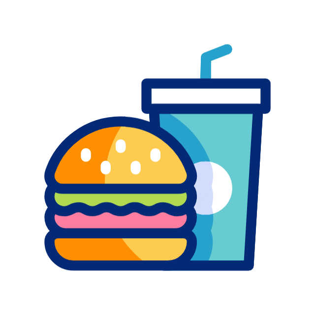

<mat-toolbar class="navbar">
    <div class="logo">
      
      <p>F<span class="logospan">oo</span>dy</p>
    </div>
    <div class="nav-icons">
      <button mat-icon-button routerLink="/customer/dashboard" aria-label="Home">
        <mat-icon>home</mat-icon>
      </button>
      <button mat-icon-button routerLink="/restaurants" aria-label="Restaurants">
        <mat-icon>restaurant_menu</mat-icon>
      </button>
      <button mat-icon-button routerLink="/search" aria-label="Search">
        <mat-icon>search</mat-icon>
      </button>
      <button mat-icon-button routerLink="/cart" aria-label="Cart">
        <mat-icon>shopping_cart</mat-icon>
      </button>
      <button mat-icon-button routerLink="/profile" aria-label="Profile">
        <mat-icon>account_circle</mat-icon>
      </button>
    </div>
  </mat-toolbar>

